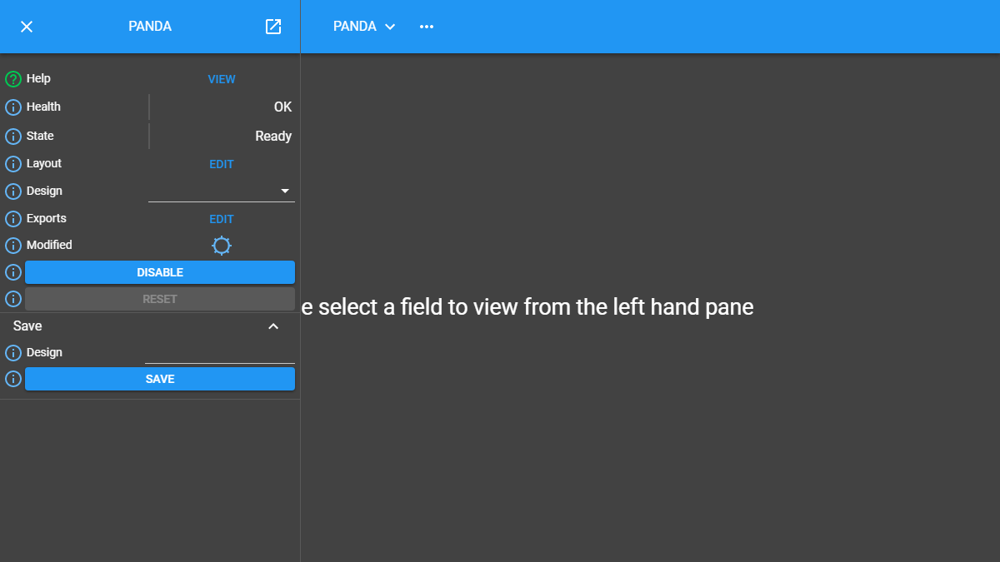
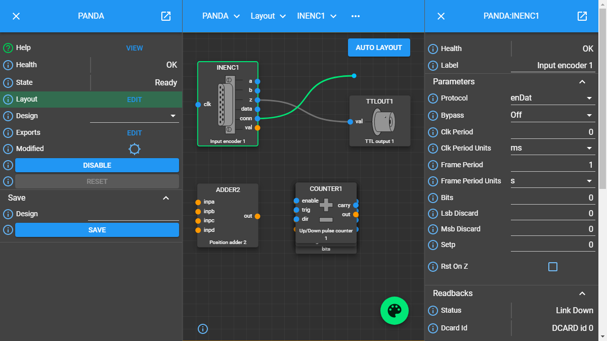

Quick Start
This quick start walkthrough aims to show you how a simple workflow might be carried out using MalcolmJS, it will be brief but the user interface should feel intuitive enough that this guide will allow you to get started quickly on your own instance.
Start by navigating to
http://{malcolm host}/gui/wheremalcolm hostis the malcolm instance you’re trying to connect to, e.g.localhost:3000
The intial screen
When the page has loaded there will be a drop down at the top of the page indicating that you need to pick a root node. Click on the drop down and you will get a menu with the list of root blocks.

Selecting a top level block
In this case click on
PANDAand this will start loading the details about thePANDAblock in the left hand panel, this is known as the parent block.The details for a PANDA block
Once the block details have loaded you will see various attributes, these are either top level attributes, attributes in a group or methods. There will be an attribute called
Layoutthat will look like the screenshot below.
Click on the
Editbutton in the layout attribute to see the layout in the middle panelClick on the
Editbutton to load the block layout for the PANDA.The layout for the PANDA block
You can then drag blocks around to update the layout, be aware that it may take a short amount of time for the position to update on the server. This is indicated by the spinner icon.

Moving blocks around and seeing the details for a child block.
Note as well that clicking on a block will load the details for that block in the right hand panel, this is known as the child block.
You can then click on a port and drag to another port to create a new link.
Creating a new link
In this way blocks can be wired together to perform more complex operations.